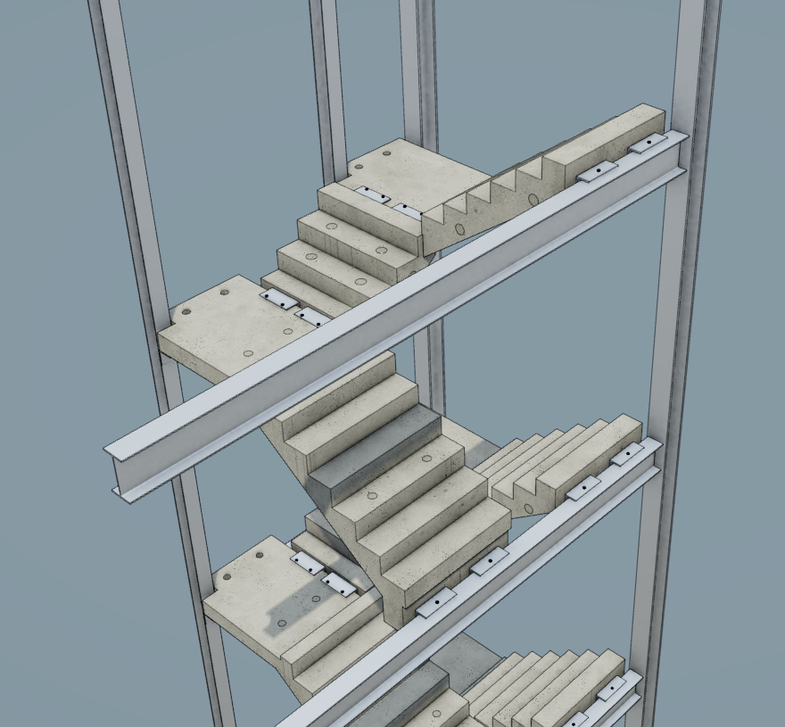

I work in precast concrete design, with a particular focus on stairs and landings.

This is an example of a precast stair arrangement modelled in three dimensions before manufacture.
Precast stair design combines engineering, manufacturing and construction.
Each unit needs to be designed accurately before it is produced.
Modern design software allows complex concrete units to be modelled in three dimensions before manufacture. This can help identify problems earlier and communicate the design more clearly.
More information about precast concrete can be found at The Concrete Centre.
Accurate digital modelling can help reduce errors before manufacture.